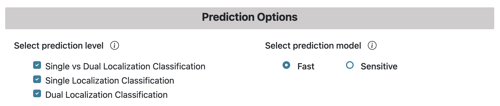

Help Page
Introduction
On this page, you will find a step-by-step guide to submit a query and obtain the result for protein localization prediction. This page will also show the different options available for prediction and what each parameter means. If you have any questions that are not covered on this page, please send an email to bioinfo@kaabil.net.
Input Data
LegumeLoc server supports protein sequence(s) in FASTA format — you can either upload a FASTA file with protein sequences, paste sequence(s) in the text area, or provide NCBI/UniProt accession ID in the text box. A maximum of 10,000 sequences can be analyzed on this server.
Prediction Levels
LegumeLoc supports three levels for legume protien subcellular localization prediction. Users can select any level for prediction and their preceeding levels will be automatically selected. For example, on selecting "Dual Localization Classification" level, the levels before it will be automatically selected. By default, all the levels are selected, which are explained below:
Level I: In this level, a query sequence is predicted as 'single' or 'dual' localization protein.
Level II: Selecting this level will first run Level I, followed by classifying the single localization proteins into 11 single localization classes.
Level III: This level will first execute Level I and Level II, followed by classifying dual localization proteins into 14 classes.
The available single or dual classes can be found in the information icon on the Prediction page.
Prediction Models
Two prediction strategies are available in LegumeLoc — Fast and Sensitive (as shown in the above figure). On the Prediction page, an information icon provides information about the models available.
- Fast: This model provides a faster prediction by using DPCP protein feature. This approach is useful for annotationg a large number of proteins at once.
- Sensitive: This model provides a more sensitive prediction at the cost of longer computation time. This approach employs TPC protein feature and is useful for the annotation of small number of proteins with high-quality prediction.
Localization Prediction
An (optional) email address can be provided to receive a link to the results when the analysis is completed. The Run Prediction button will execute the prediction on LegumeLoc server. The link to the results (available on query submission) can also be copied or bookmarked for later use.
Output Example
The result table will change based on the prediction level selected. As shown below, results an be viewed for Level 1, Level 2, or Level 3. The selected level will be red in color. For each level, the Download Results button can be used to download the comprehensive results table in tab-delimited format.
Browser Compatibility
LegumeLoc has been tested in the following environments:
| OS | Version | Chrome | Firefox | Safari | Edge |
|---|---|---|---|---|---|
| Linux | Ubuntu 22.04 | 108.0.5359.71 | 112.0.2 | n/a | 113.0.1774.35 |
| MacOS | Ventura 13.3.1 (a) | 108.0.5359.71 | 112.0.2 | 16.4 | 113.0.1774.35 |
| Windows | 10 | 108.0.5359.71 | 112.0.2 | not tested | 113.0.1774.35 |